美股 异常资金推动滚雪球下跌！好消息，坏消息！计划内建仓一只股票！SOXX、QQQ、SPY、TSM、APP！本期重点10 组 · 46 条市场与 VIX6基金与 CTA5信用与融资3NFLX10后续市场路径2QQQ3SPY 与标普5SOXX4TSM3APP5市场与 VIX普跌扩散、恐慌保护增加，量化与去风险卖盘放大冲击。6 条市场广度纳指100下跌约 6%，标普500下跌约 4%，标普成分股中约 430 只下跌、73 只上涨，11 个板块全部下跌▶回听01:16—01:55对应正文 ↗半导体表现费城半导体指数下跌约 12%，30 只成分股全部下跌▶回听01:56—02:11对应正文 ↗恐慌保护VIX 已进入 25 以上的恐慌保护区间 前一天约16，当天约28，原图28.18。▶回听02:11—02:35对应正文 ↗首轮冲击期货成交量突然放大，价格快速下挫，呈现出集中抛售与量化触发的特征 CTA约7500触发规模有限，不能解释全部抛压。▶回听03:26—04:25对应正文 ↗多空失衡买入与卖出的占比约为 23∶75，另约 2% 属于直接做空，卖出股票的规模约为买入的三倍▶回听05:06—05:40对应正文 ↗杠杆产品抛售SOXL 与 TQQQ 成为散户集中卖出的两个主要杠杆产品，抛售规模为 7 月底以来最大▶回听05:40—06:09对应正文 ↗基金与 CTA损失压低承接，后续大额交易仍取决于价格情景。5 条策略亏损全球基本面多空策略基金亏损约 3.49%，量化策略基金亏损约 3.6% 2016年有记录以来，首次同月均达或超3%。▶回听06:46—07:07对应正文 ↗基金分化信用基金 Arini 约跌 12.1% Kirkoswald约跌6.4%，Citadel Wellington约涨1.7%；截止口径见原图。▶回听07:12—08:12对应正文 ↗上涨加速上涨加速触发位约为标普 7720 点，对应潜在买入规模约 1300 亿美元 未来一个月情景估算，尚非实际发生。▶回听09:57—10:30对应正文 ↗下跌加速下跌加速触发位约为 7130 点，对应潜在卖出规模约 1600 亿美元▶回听10:05—10:30对应正文 ↗标普分层7330—7419 点为较小区域，7085—7163 点为中等区域，6800—7020 点与 6550—6765 点为较强区域 来自同段原图，区别于CTA触发线。▶回听09:47—10:30对应正文 ↗信用与融资数据中心信用风险重估，优质发债需求仍强。3 条CDS压力数据中心 CDS 继续走高，盘中和收盘均创新高 口述约500基点，个别标的约1200；当天新图未贴，未把旧图当新数据。▶回听10:45—11:24对应正文 ↗大厂信用变化超大规模数据中心的 CDS 前一天回落，当天也出现拐头向上，相关大公司的股价随之承压▶回听11:25—11:44对应正文 ↗苹果发债通过 7 笔交易筹集约 70 亿美元，吸引约 310 亿美元认购，约为发行额的 4.5 倍▶回听11:48—12:19对应正文 ↗NFLX已建2%、均价65.67，余2%等待突破或重新止跌。10 条实际建仓新建 NFLX 仓位约 2% 完成预留仓位一半，剩余2%尚未买入。▶回听12:28—12:47对应正文 ↗成交价格成交均价约 65.67 美元▶回听14:44—14:50对应正文 ↗日线结构跳空放量突破了自 10 月 27 日以来的横盘区域，而且接近从 9 月 3 日高点延伸下来的下降趋势线 进一步突破仅增强短期小结构，不等于大结构已反转。▶回听12:48—13:23对应正文 ↗月线与相对强弱月线 RSI 在 10 月出现较明显的底背离，价格创新低，指标没有同步创新低 纳指大跌而NFLX小跌，抛压相对较轻。▶回听13:24—14:29对应正文 ↗向上补仓向上突破下降趋势线后再买，届时价格会高于首次建仓价▶回听14:32—14:54对应正文 ↗回落补仓突破失败、重新回到区间后，等待较强止跌形态，或横盘后的放量突破，再考虑补齐▶回听14:55—15:09对应正文 ↗增长约束2026 年增速约 41%、2027 年约 5%，五年复合年化增速约 19% 2027个位数增长及AI短剧等竞争风险需要计价；完整增速来自原图。▶回听15:10—15:35对应正文 ↗年度估值2026 年前瞻区间约为 72—108 美元、中位 90；2027 年约为 76—114 美元、中位 95 20—30倍参考估值；口述另以回到90作约四成空间的情景举例。▶回听15:36—16:03对应正文 ↗下修条件如果 2027 年增长进一步恶化，甚至转为负增长，前瞻估值可能下调，价格仍可能更低，修复也可能需要更长时间▶回听16:09—16:22对应正文 ↗支撑层级60.5—65.6 美元为较强长线区域，强调止跌条件；下方 54.3—58.3 美元为超强长线区域，47—50 美元为超强区域 来自同段原图，不以到价代替形态确认。▶回听15:38—16:25对应正文 ↗后续市场路径强制卖盘可能缓和，资金回流仍要等待稳定。2 条积极条件去风险最严重的强制抛售阶段可能已经过去 机构分析观点，仍需市场验证。▶回听17:37—18:13对应正文 ↗基准路径先横盘、上下反复，让波动风险逐渐降低，再吸引资金回补 立即V形反转属于更有利路径，并非基准。▶回听18:15—19:07对应正文 ↗QQQ642—664首档已到，等待横盘与止跌，不急于重仓。3 条首档位置收盘约 647.05 美元，已经进入 642—664 美元中等长线区域▶回听19:16—19:53对应正文 ↗形态条件当天是一根缺乏抵抗的大阴线，没有出现止跌形态，不能因为碰到区间或盘后反弹，就认定为已经确认的买点▶回听19:54—20:19对应正文 ↗后续两档617—635 美元与 585—610 美元，两档在图中均为超强长线区域 上方668—681、687—694及696—728按不同强度观察。▶回听20:19—20:32对应正文 ↗SPY 与标普728下沿影响修复节奏，约7100长线判断依赖现有盈利前提。5 条200日附近SPY 当天约为 733 美元，已进入 728—753 美元较强长线区域 接近图中约732.6的200日均线防守位。▶回听20:34—20:49对应正文 ↗破位影响若跌破 728 美元，技术上更偏空，短期波段交易的条件会变差 下方702—710、671—694等长线档位继续保留。▶回听20:49—21:12对应正文 ↗年度框架下一步重点观察约 7100 点。此前给出的 2026 年合理波动框架是 7000—8500 点 约7800回撤一成对应7100，仅在现有盈利及估值前提下评估。▶回听21:26—22:08对应正文 ↗重新定价条件如果数据中心长期延期，AI 货币化进程被大幅延后，市场必须重新定价，原有估值框架也需要调整▶回听22:24—23:08对应正文 ↗更差风险情景标普至少约两成、纳指至少约三成的更大回撤。这是风险情景，当前尚未证实▶回听23:10—23:54对应正文 ↗SOXX一拆三后重新标价，128—134小支撑与160—179强压力。4 条口径切换SOXX 当天按一拆三后的价格交易，原有价格需要除以三 本期与前一期绝对点位不能直接混用。▶回听23:55—24:10对应正文 ↗当前及下方128—134 美元为较小支撑，下方 117—124 美元和 108—115 美元为较强支撑 再下方99.7—104中等、92.8—98.2较强，来自原图。▶回听24:10—24:20对应正文 ↗反弹压力145—156 美元为中等压力，160—179 美元与 182—192 美元为较强压力▶回听24:21—24:44对应正文 ↗重仓风险处理如果反弹到 160—179 美元，而原本仓位较重、又担心 AI 货币化继续推迟，可以重新评估技术性减仓机会▶回听24:21—25:08对应正文 ↗TSM价格已到，未止跌所以未加仓，等待确定性与价格同时满足。3 条实际执行TSM 当天仍未加仓。尽管价格已经跌破 360 美元，收盘约 353.10 美元，但大阴线并不符合我的加仓纪律▶回听25:11—25:48对应正文 ↗分档计划360—378 美元约 2%、320—350 美元约 4% 的分档加仓计划，两档均要求止跌 来自本期持仓图，下方另有270—306较强长线区。▶回听25:19—25:48对应正文 ↗购买条件较大的确定性与相对合适的价格同时具备。如果一直下跌、始终没有合适形态，就继续不买▶回听25:51—26:06对应正文 ↗APP财报后大涨31%，本次只更新技术面，408与304区分后续路径。5 条市场表现当天逆势上涨约 31%，原图收盘约 356.10 美元 财报后估值尚未更新，不把旧增长标注当新估值。▶回听26:58—27:13对应正文 ↗回到震荡价格重新站上 353 美元，回到约 304—408 美元的整体震荡框架▶回听27:14—27:23对应正文 ↗右侧条件突破 408 美元，才进一步进入右侧趋势判断 上方366—408为较强压力带。▶回听27:24—27:31对应正文 ↗重新转弱尤其再跌破 304 美元后，走势会重新转弱 需留意市场走坏与短期获利盘回吐。▶回听27:32—27:44对应正文 ↗下方支撑250—293 美元较强支撑、221—240 美元中等支撑 更低198—215、157—180等档位以原图为准。▶回听27:14—27:44对应正文 ↗这期涉及哪些股票与内容？NFLX主讲新建2%均价65.67，余2%等待突破或止跌；2027估值76—114中位95，增长约5%。TSM主讲价格跌破360仍未加仓，360—378与320—350分档计划均需止跌。APP主讲财报后大涨31%，353回震荡，408突破转右侧，304失守重新转弱；估值未更新。SOXX主讲一拆三后128—134小支撑，117—124与108—115强支撑，160—179强压力。QQQ主讲642—664首档已到，尚无止跌，下方617—635与585—610。SPY主讲728—753首档及200日附近防守，跌破728则技术更偏空。AAPL主讲七笔发债筹资70亿美元，认购310亿美元，信用质量与需求分化。背景提及：SOXL、TQQQ、AMZN、GOOG、META。市场指标：VIX、SPX、SOX、CDS、ES、NQ。背景提及不代表对该股票展开分析。CHAPTER 01 · 回听 01:11普跌与恐慌保护，半导体跌幅进一步扩大美东时间 2026 年 11 月 5 日晚，数据中心放缓的影响继续发酵。前一天还是半导体独跌，当天已经扩散为四大指数普跌。纳指100下跌约 6%，标普500下跌约 4%，标普成分股中约 430 只下跌、73 只上涨，11 个板块全部下跌，防御板块也未能避开抛售。费城半导体指数下跌约 12%，30 只成分股全部下跌，跌幅较小的也超过 7%，较大的达到 17%—19%。这次下跌的突出特征是速度快、范围广，已经超出了单一板块的调整。VIX 前一天在保护平仓后回落至约 16，当天又迅速升至约 28，原图为 28.18。随着盘前期货急跌，对冲保护需求激增，VIX 已进入 25 以上的恐慌保护区间。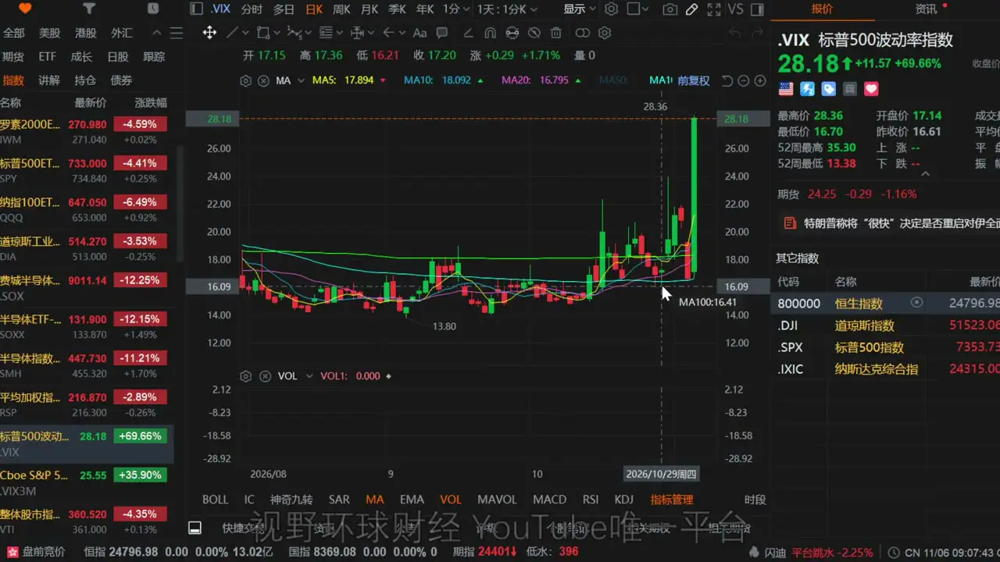放大查看 ↗VIX：从约 16 升至 28.18原视频 02:20回听此处CHAPTER 02 · 回听 02:36盘前失衡，怎样滚成现货与杠杆 ETF 的连续抛售市场出现了关于基金清算的讨论。根据客户信函的报道，Walleye 部分清算并向投资者返还部分资金。另一些关于多家对冲基金交易团队遭受重大损失、触发止损的社交媒体消息，尚未得到证实，不能把这些传闻直接当作盘前卖盘身份的结论。现货开盘前三小时左右，期货成交量突然放大，价格快速下挫，呈现出集中抛售与量化触发的特征。卖压来得太快，承接不足，随后虽然出现过一轮反弹，却没有维持太久。CTA 在标普约 7500 点附近的中期触发也有贡献，但这一档卖出规模有限，不能把整轮异常下跌都归因于 CTA。高盛的数据显示，现货开盘后对冲基金买入与卖出的占比约为 23∶75，另约 2% 属于直接做空，卖出股票的规模约为买入的三倍。失衡卖盘令市场再度下挫，对冲保护随之上升。原本尝试开盘抄底的部分散户也转向卖出，抛售从个股扩展到杠杆 ETF。SOXL 与 TQQQ 成为散户集中卖出的两个主要杠杆产品，抛售规模为 7 月底以来最大。这条链条从期货失衡开始，经基金去风险、量化触发与散户跟随不断放大，最终形成滚雪球式下跌。具体是哪一家或哪几家基金造成最初冲击，目前仍不清楚。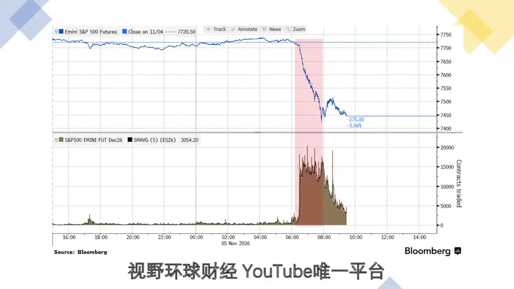放大查看 ↗盘前期货：成交量激增与快速下跌原视频 03:50回听此处CHAPTER 03 · 回听 06:10基金损失已累积，不能把异常冲击当成日常波动10 月份，全球基本面多空策略基金亏损约 3.49%，量化策略基金亏损约 3.6%。根据本期所引数据，自 2016 年有记录以来，两类基金首次在同一个月都亏损达到或超过 3%。在此前损失已经较大的背景下，再遇到剧烈波动，更容易触发降风险和止损。彭博汇总的大型基金统计也反映了压力。Millennium 约跌 2.3%，ExodusPoint 约跌 2.4%，Marshall Wace Eureka 约跌 5.4%，信用基金 Arini 约跌 12.1%。与 Greg Coffey 相关的 Kirkoswald 基金约跌 6.4%，结束了此前连续 16 个月上涨的纪录。相较之下，Citadel 的 Wellington 基金 10 月约涨 1.7%。这些统计的截止口径以原图脚注为准，不能将所有基金的数字都理解为完全相同的统计日期。本轮冲击主要体现为短期动量资金的集中抛售。连续出现超过三个标准差的波动本来十分少见，从 10 月至今却已经遇到两次。判断后续走势时，既要关注基本面，也要关注资金被迫去风险后，市场还剩多少承接能力。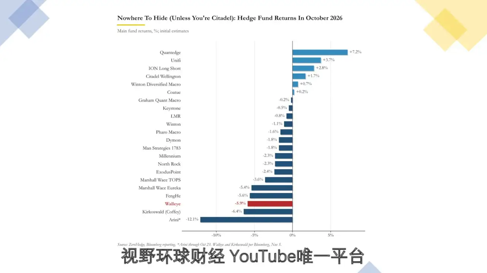放大查看 ↗10 月基金回报：不同策略的损失原视频 07:00回听此处CHAPTER 04 · 回听 09:12CTA 的下一档加速，关注 7720 与 7130此前一个多月，标普波动区间较窄，CTA 在股票端的交易不活跃，更多在回补债券和抛售黄金。当天约 7500 点附近确实触发了一部分卖盘，但规模不大。更值得关注的是下一档会显著加速的条件位置。按本期未来一个月的情景测算，上涨加速触发位约为标普 7720 点，对应潜在买入规模约 1300 亿美元；下跌加速触发位约为 7130 点，对应潜在卖出规模约 1600 亿美元。这些是对应路径下的资金流估算，价格没有进入相应情景前，不能当作已经发生的买卖。原图同时标示标普现货支撑，7330—7419 点为较小区域，7085—7163 点为中等区域，6800—7020 点与 6550—6765 点为较强区域。技术支撑和 CTA 触发线是不同工具，应分别观察。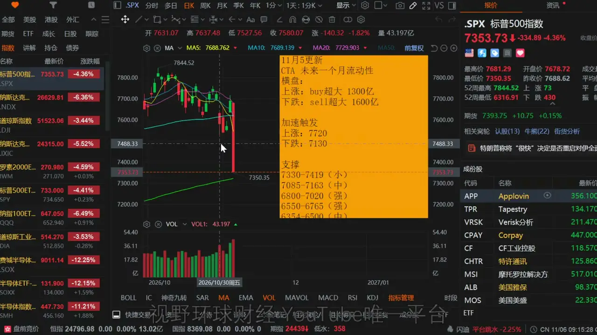放大查看 ↗标普与 CTA：7720、7130 加速情景原视频 10:05回听此处CHAPTER 05 · 回听 10:45信用压力与企业发债，优质资产也在吸收资金数据中心 CDS 继续走高，盘中和收盘均创新高。口述提到约 500 个基点，并提到个别高风险标的约 1200 个基点，反映市场对信用风险的定价明显增强。优质企业与高风险公司的信用成本相差很大，不能仅因为都属于数据中心主题，就按相同的风险处理。当天没有贴出最新 CDS 图，不把前一天的图当作当天的新数据。超大规模数据中心的 CDS 前一天回落，当天也出现拐头向上，相关大公司的股价随之承压。硬件交付、建设节奏与融资压力之间仍在互相影响，信用端的变化值得继续跟踪。企业债发行仍在持续。苹果计划通过 7 笔交易筹集约 70 亿美元，吸引约 310 亿美元认购，约为发行额的 4.5 倍。较高信用评级与较好的资产负债表，让其债券仍然受到资金欢迎。这也说明，同样处在融资市场中，不同公司的信用条件和吸引力存在明显差异。CHAPTER 06 · 回听 12:28NFLX 新建一半仓位，技术修复与分散持仓共同驱动当天新建 NFLX 仓位约 2%，成交均价约 65.67 美元，完成预留仓位的一半，另有 2% 尚未买入。这次建仓同时考虑了技术修复迹象、当日相对强弱，以及降低持仓对 AI 投资主题的集中度。NFLX 此前在 60.5—65.6 美元附近横盘数个交易日，前一天跳空放量突破了自 10 月 27 日以来的横盘区域，而且接近从 9 月 3 日高点延伸下来的下降趋势线。若进一步突破这条趋势线，短期小结构的上行趋势会增强，但还不能据此确认更大的结构已经完成反转。月线 RSI 在 10 月出现较明显的底背离，价格创新低，指标没有同步创新低，意味着更大级别的企稳与修复概率有所提高。当天纳指大跌，NFLX 仅小幅下跌，相对抛压较轻，也增强了技术修复的观察信号。剩余 2% 仓位有两种考虑方式。一是向上突破下降趋势线后再买，届时价格会高于首次建仓价。二是突破失败、重新回到区间后，等待较强止跌形态，或横盘后的放量突破，再考虑补齐。不会只因为股价重新进入某个价格区间就立即买入。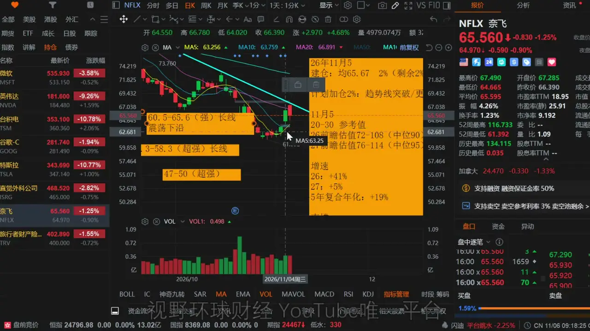放大查看 ↗NFLX：65.67 建仓与下降趋势线原视频 13:02回听此处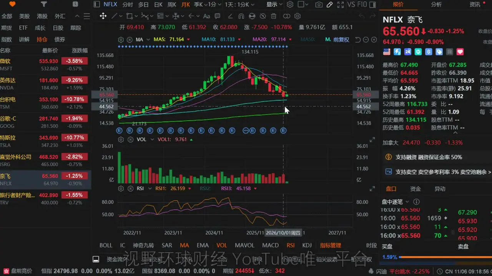放大查看 ↗NFLX 月线：价格新低与 RSI 底背离原视频 13:33回听此处CHAPTER 07 · 回听 15:10NFLX 的估值空间，必须连同低增速与经营风险阅读基本面增速是 NFLX 当前的短板。原图列示 2026 年增速约 41%、2027 年约 5%，五年复合年化增速约 19%。2027 年只有个位数增长，是判断其估值和持仓速度时必须考虑的约束。AI 短剧及其他行业形态变化的竞争风险，也需要自行计价。按原图 20—30 倍参考估值，2026 年前瞻区间约为 72—108 美元、中位 90；2027 年约为 76—114 美元、中位 95。口述另外用回到约 90 美元作偏乐观的情景举例，从 60 多美元出发约有四成想象空间。90 美元是这一举例所用价格，不能与 2027 年模型中位 95 美元混为一谈，也不能将情景空间理解为确定收益。如果 2027 年增长进一步恶化，甚至转为负增长，前瞻估值可能下调，价格仍可能更低，修复也可能需要更长时间。何时能够回到上述区间、最终能否到达，都不能确认。我的出发点是小仓位参与价格修复和均值回归，并已把相应风险计入个人计划。技术图标示 60.5—65.6 美元为较强长线区域，强调止跌条件；下方 54.3—58.3 美元为超强长线区域，47—50 美元为超强区域。这些位置用于分层评估，不能替代经营变化和形态确认。后续需要随着实际基本面调整判断，每笔交易都可能失败。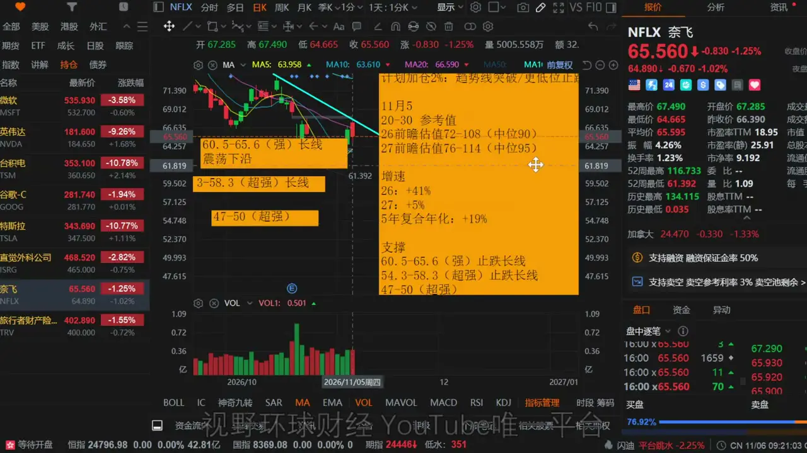放大查看 ↗NFLX：2026、2027 年估值与下方分层原视频 15:40回听此处CHAPTER 08 · 回听 17:31抛售最剧烈阶段可能过去，立即 V 形反转仍非基准机构分析认为，基金遭遇严重动量冲击，部分仓位被清算，散户也开始动摇后，去风险最严重的强制抛售阶段可能已经过去。这是偏积极的一面，但“可能过去”仍需后续市场表现验证，不能机械外推每天都将重复同样幅度的冲击。另一面是基金损失严重后需要修复，通常要等市场稳定一段时间，才会重新进入。我的基准判断是先横盘、上下反复，让波动风险逐渐降低，再吸引资金回补，而非立即 V 形反转、迅速收复全部跌幅。若直接出现 V 形反转，属于比基准更有利的路径。CHAPTER 09 · 回听 19:16QQQ 已到下方首档，但大阴线不构成止跌确认QQQ 跌破此前的偏空与确认走空位置后，很快来到下方第一档观察区。原图显示收盘约 647.05 美元，已经进入 642—664 美元中等长线区域。对希望在宽基指数上寻找较好长期收益条件的资金，价格位置开始具有观察价值。当天是一根缺乏抵抗的大阴线，没有出现止跌形态，不能因为碰到区间或盘后反弹，就认定为已经确认的买点。最好先横盘、形成稳定过程，再评估是否参与，不适合刚到第一档就立即投入重仓。下方继续分层观察 617—635 美元与 585—610 美元，两档在图中均为超强长线区域。上方 668—681 为较小区域，687—694 为此前破位确认走空的中等区域，696—728 为较强压力区域。三档下方位置是分批评估框架，仍需等待形态和资金条件。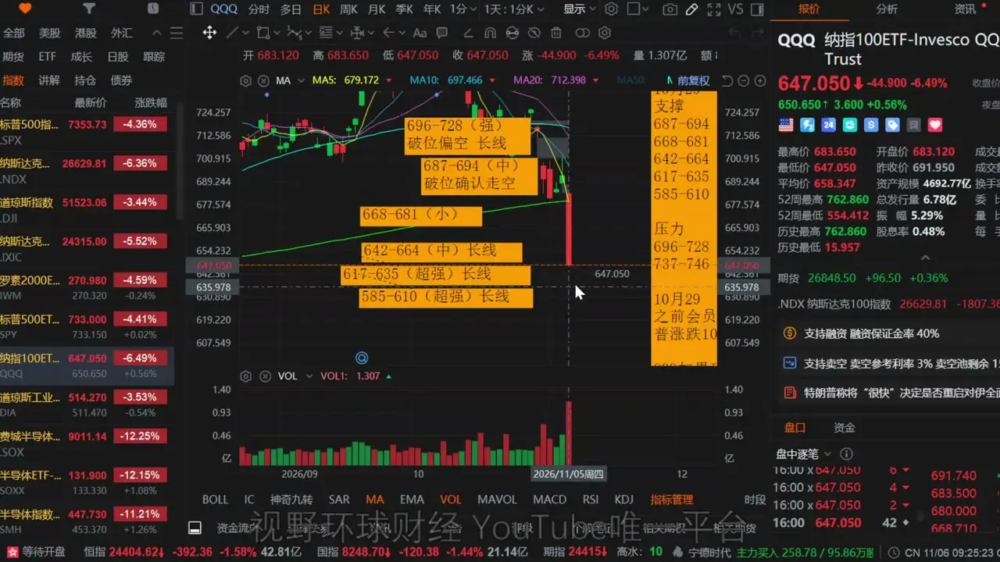放大查看 ↗QQQ：642—664 首档与两档更低支撑原视频 20:00回听此处CHAPTER 10 · 回听 20:34SPY 的 728 防线，与标普约 7100 的长线评估SPY 当天约为 733 美元，已进入 728—753 美元较强长线区域，接近图中约 732.6 附近的 200 日均线防守位置。728 美元是这档区域的重要下沿，是否守住，会影响后续更偏向较快修复，还是在下方经历更久的震荡。若跌破 728 美元，技术上更偏空，短期波段交易的条件会变差，下方仍需逐档测试。原图后续列示 702—710 美元中等长线区域、671—694 美元超强长线区域，以及 648—667 美元较强、623—639 美元中等区域。长期评估区和短期趋势处理可以同时存在，不能把长线区间理解为短线不会继续下跌。从标普指数口径看，下一步重点观察约 7100 点。此前给出的 2026 年合理波动框架是 7000—8500 点，目前正从区间上部向下部移动。从约 7800 点回撤一成，大致对应 7100 点；在现有盈利和估值前提下，这属于可以讨论长期价格条件的位置。这一判断依赖现有基本面。即便后续盈利预测小幅下修，可能还要观察约 6800 点等更低位置，但不能据此推导出所有风险都已消失。如果数据中心长期延期，AI 货币化进程被大幅延后，市场必须重新定价，原有估值框架也需要调整。在 AI 货币化真正走不通的更差情景下，我担心的将是标普至少约两成、纳指至少约三成的更大回撤。这是风险情景，当前尚未证实。当天标普甚至还未进入从前高回撤一成的修正区域，不能将已经发生的急跌与最坏情景混成同一个判断。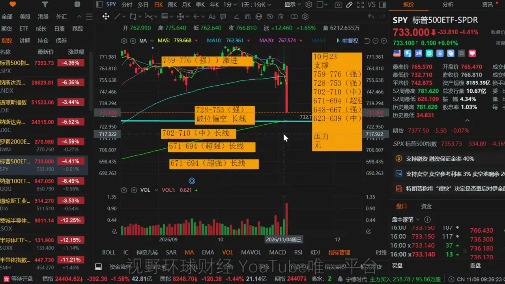放大查看 ↗SPY：728—753 防线与下方长线区原视频 21:00回听此处CHAPTER 11 · 回听 23:55SOXX 一拆三，全部技术点位切换为拆股后口径SOXX 当天按一拆三后的价格交易，原有价格需要除以三，技术位置也已重新标注。本期所有 SOXX 点位均为拆股后口径，不能与前一期的绝对价格直接混用。原图收盘约 131.90 美元，跌幅约 12.15%。当前 128—134 美元为较小支撑，下方 117—124 美元和 108—115 美元为较强支撑，再下方有 99.7—104 美元中等区域及 92.8—98.2 美元较强区域。上方 145—156 美元为中等压力，160—179 美元与 182—192 美元为较强压力。如果反弹到 160—179 美元，而原本仓位较重、又担心 AI 货币化继续推迟，可以重新评估技术性减仓机会。此前首次破位后的反弹已经给过处理窗口，不能每次都等到更深下跌才重新讨论纪律。对我的交易方式，破位后按计划处理，与多争取几美元价差相比，更重要的是趋势是否发生改变。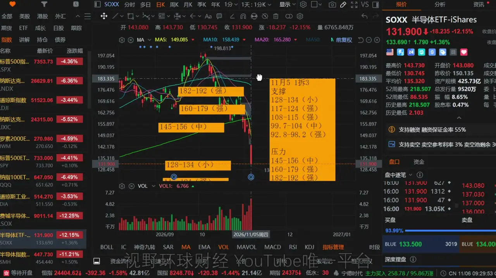放大查看 ↗SOXX 一拆三：128—134 与 160—179原视频 24:30回听此处CHAPTER 12 · 回听 25:11TSM 已到价格区间，尚未满足加仓形态TSM 当天仍未加仓。尽管价格已经跌破 360 美元，收盘约 353.10 美元，但大阴线并不符合我的加仓纪律。原先计划对应的价格区间已经到了，止跌条件还没有出现。原图继续保留 360—378 美元约 2%、320—350 美元约 4% 的分档加仓计划，两档均要求止跌。再下方 270—306 美元为较强长线区域，上方还有 399—406 美元较强区域和 410—424 美元较强激进区域。进入某一档并不意味着必须自动成交。我的要求是较大的确定性与相对合适的价格同时具备。如果一直下跌、始终没有合适形态，就继续不买。近几年减少仅凭价格挂单，也是因为支撑区间较宽，自动成交可能偏离预期成本。盘后上涨不会改变当天收盘时的买入纪律，后续若形成适合的形态，仍随时可能执行。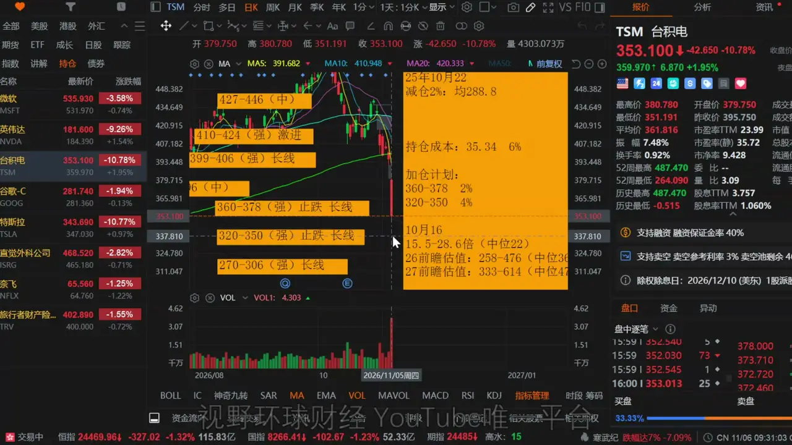放大查看 ↗TSM：价格到位后继续等待止跌原视频 25:40回听此处CHAPTER 13 · 回听 26:45APP 财报后逆势上涨，353、408 与 304 是关键APP 因财报表现较好，当天逆势上涨约 31%，原图收盘约 356.10 美元。本次尚未完成财报后的估值更新，因此只更新技术面，不将画面中原有的增长标注当成已经完成的新估值结论。价格重新站上 353 美元，回到约 304—408 美元的整体震荡框架，当前在约 350 美元的中间位置。图中 304—353 美元是较强区域，上方 366—408 美元是较强压力带；突破 408 美元，才进一步进入右侧趋势判断。若无法突破上方关卡，市场又转差，或短期获利盘集中卖出，价格可能被重新压回。尤其再跌破 304 美元后，走势会重新转弱。下方原图另有 250—293 美元较强支撑、221—240 美元中等支撑，以及 198—215、157—180 等更低档位。应根据技术条件安排风险，不能仅凭当日大涨判断后面一定顺利。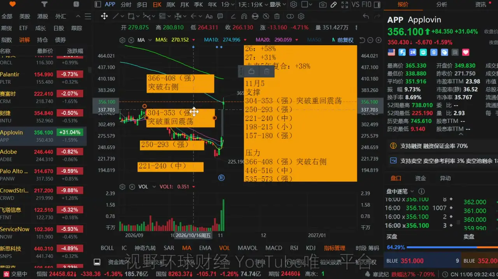放大查看 ↗APP：353 回到震荡，408 突破与 304 风险线原视频 27:20回听此处CHAPTER 14 · 回听 28:04盘后有小幅承接，资金回流仍需要稳定过程录制末段，标普期货在 200 日均线附近、纳指期货在此前测算区域附近出现小幅承接，盘后走势有所稳定。这只是当时的小幅买盘介入，并未确认新的上升趋势。原片随后删除了纳指第二条旧测算线，避免把它误解为到线必然止跌的信号。近期对冲基金多头仓位已经降得较低，大跌后的价格对资金可能重新具有吸引力，但资金回流仍取决于市场能否稳住。接下来更应观察横盘与波动收敛、基金回补和个股自身形态，而非仅凭一次盘后反弹就认定全面修复。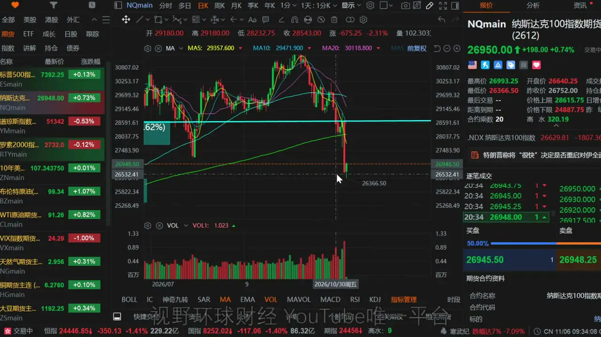放大查看 ↗盘后纳指期货：移除旧测算线后的画面原视频 28:45回听此处SOURCE MATERIAL完整转录与回听原视频：美股 异常资金推动滚雪球下跌！好消息，坏消息！计划内建仓一只股票！SOXX、QQQ、SPY、TSM、APP！机器原稿可能含同音字与数字单位错误，保留用于对照。播放00:0029:301×1.25×1.5×2×静音展开完整转录下载 TXT ↗下载 SRT ↗查找转录内容00:00大家好,欢迎回到视野环球财经,我是Ryno。00:04现在是美东时间,2016年11月5号,周四晚上的8点55分。00:09咱们先说个节目通知啊,明天的美东时间周五呢,我个人有事情要处理啊,和这个节目录制的时间冲突了啊,所以没有办法更新节目。00:19那么今天的视频呢,是本周最后一期公共视频的节目。00:24如果明天我有什么仓位的变化会发帖子通知啊,如果没有仓位变动呢,00:29我就不会发任何信息了啊。00:31另外呢,本周会员节目会照常更新。00:35好,那么今天的节目呢,我等会会谈到的包括一些个股啊,比如我有这个今天建仓的一只股票啊,还有台积电,我到底加没加呢?00:45首先告诉大家啊,我还没加啊,那我给大家跟一下。00:48另外呢,包括我现在大盘的情况。00:51另外呢,还有像费城半导体指数的ETFSOXX啊,因为今天一拆三交易,我等会把位置呢,00:59会给大家更新一下。01:00再有一个呢,就是关于APP,大家问的多的,我把技术面等会跟大家重新更新一下。01:07好,那咱们开始今天的颠簸之旅啊。01:11那,数据中心的放缓影响呢,今天是还在发酵。01:16昨天呢,是半导体独跌啊,今天呢,就是四大指数暴跌。01:22纳指100指数是跌了6%,那么标普是下跌了4%,标普成分股今天也是非常的糟糕啊。01:31整个呢,是下跌的个股数量达到了430只多,那么上涨的只有73只。01:38像什么之前有防御属性的一些板块,那么今天也没有房柱啊,整个的标普11个板块是全部下跌啊,一个绿的都没有啊,倒是非常的整齐啊。01:56另外呢,费城半导体指数,今天呢,是一口气大跌了12%,30只成分股无一幸免啊,全部下跌。02:05跌的少的是跌了7个多点,那么多的跌了17%到19%。02:11还有一个呢,就是VIX。02:14VIX呢,是在昨天的平仓交易回落到16之后啊,今天呢,是一柱晴天啊,随着今天盘前期货的暴跌啊,02:26后面是保护激增,一口气给干到了28啊,这个呢,已经是跑到了25以上的恐慌保护水平。02:36从今天的这个走势看啊,市场是跌得又急又快。02:41社交媒体和市场评论中呢,也充斥着关于潜在的基金清算的讨论。02:48那么有报道说啊,根据一封客户的信函,对冲基金Wall Eye呢,是部分清算,02:55并向投资者返还了部分资金啊,我已经看到了他们的那个告投资者的那个姓啊,确实是这个证实了。03:04还有一些未经证实的社交媒体的报道说呢,03:07多家对冲基金的交易小组遭受了重大损失,触及止损,抛压,集中释放。03:15其实咱们如果看昨天的这个航行啊,本来呢,昨天的这个航行其实除了半导体稍微差一点,整体还是不错的。03:26但是呢,今天在现货开盘前的三个小时左右,期货是出现了一场。03:38我们来看一下这张图表啊,呃,在期货今天,新的期货开盘之后啊,我们看到交易量是突然间在开盘前的大概三个小时激增啊。03:50大量的增加。03:52感觉呢,是有人在清算抛售。03:56但是呢,这个顺时抛压,由于来得太快太大,它没有足够的承接啊,尽管买盘已经很努力了。04:04啊,不要说这个做事商已经很努力了,对吧?但是呢,仍旧没有抵消掉盘前的这个下跌啊,这个是跌得非常的快。04:13这里边呢,当然有一部分是CTA的功劳啊,因为他们的这个中期出发点为大概在7500左右。04:20啊,但是这个不是主要的啊,因为他们本身这个点位的卖盘的力度有限。04:26我稍后呢,会给大家更新一下关于CTA的最新的情况,后面更大的在哪里,还有更大的买盘在哪里。04:36好,咱们接着这个话题往下聊啊。04:38嗯,说到资金呢,这个盘前期货的异常抛压之后,其实呢,市场是反弹过一波的。04:47我们看一下。04:50其实市场呢,从期货到后来的这个,这个是现货啊,你可能看到的这个情况会稍微的差一些。04:58期货那边其实是反弹过一波。05:01那么这个反弹过一波呢,但是没有持续太久。05:06因为,呃,根据高盛的这个数据的显示呢,对冲基金,它的做多和做空严重的失衡。05:16那么现货开盘之后,它的买入和卖出的比例是23比75,还有那个二呢,剩下它现在不加起来不是98吗?05:26还有那个二是这个直接做空的啊。05:29就是买股票买了23,卖股票卖了75。05:33那么卖股票是买入股票的三倍。05:36所以呢,市场是再次下挫,保护也开始飙升。05:40随后啊,在开盘第一点想抢着进场的散户,本来有人想抄一抄底,一看形势不对,马上也掉头加入了抛售大军。05:51从个股抛到杠杆ETF,那么杠杆ETF主要是两个最大的抛售,一个是SOXL,三倍做多费上半导体,另外一个是TQQQ,三倍做多QQQ。06:04今天呢,他们是自7月底以来散户的抛售规模最大的一次。06:10嗯,那么关于这个盘前的期货的异常抛压啊,说实话,CTA是一个推动力,那么不清楚到底是哪家对冲基金还是哪几家对冲基金啊,他们在做这个事情。06:29因为它有具有比较明显的这个抛售和量化触发一股脑的扔出来的这个特征啊,我们知道我们前几天给大家看过一个图表,对吧?06:39嗯,关于介绍市场的对冲基金的10月份的这个收益状况的。06:46其实全球基本面多空策略基金呢,在整个的10月亏损本来就比较大啊,已经是来到了3.49%。06:54量化策略基金亏损了3.6%。06:58这个是自2016年有记录以来,首次出现两类基金在同一个月内亏损,全部都达到或超过3%的情况。07:08也就是10年时间啊,我们又见证了一次历史。07:12另外呢,彭博呢,是对几家大型基金的统计,也验证了这一点。07:17你比方说像千禧基金10月份下跌2.3%,呃,比方说这个X2's Point,它是下跌了2.4%,还有这个Marshall Weiss,它是下跌了5.4%,那信贷基金最惨啊,信贷这个Irene呢,是创下了历史上最糟糕的单月表现,暴跌了12.1%。07:37那么今天下午呢,彭博又追了一篇文章啊,说这个这个Greek of Coffee的这个,它的基金呢,也是遭遇了史上的最糟糕的单月表现,它呢是下跌了6.4%,为什么提它呢?07:53因为它已经连续16个月上涨啊,业绩非常的好,那这10月份它也做的非常的糟糕啊。08:00唯一表现不错的是谁呢?是这个老牌的啊,城堡证券。08:06他们的这个旗舰,Wellington这个基金呢,是上涨了1.7%在10月份。08:13好,总而言之,今天的这个市场呢,它就像一台从山顶向下滚的雪球,啊,本来呢,只是一个盘前的期货失衡,就导致这个雪球是越滚越大,啊,追踪呢,08:29这没人能承接住,啊,直接就砸向了谷底。08:33哎呀,这个东西呢,就属于什么,属于这个非常异常的一次这个灾难啊。08:39好,搞清楚了,大概的,我们说市场连续抛售的最主要的原因,你可能还是有感觉啊,就是,08:47它其实是一些短期的动量资金的集中抛售导致的。08:52我们在美股市场呢,通常像这种连续超过三个标准差连续出现的事件呢,是极少极少数的啊。09:00但是呢,从10月到现在,出现过两回。09:03所以,真的是,应来那句话,投资的时间越长,啊,那个建造的妖精就越多啊。09:12好,刚才我说没有讲CTA,我把这个给大家更新一下。09:19呃,之前没有讲CTA,差不多有一个多月吧,是为什么呢?09:22因为CTA无所作为,他们在美股市场中因为一直处于一个很窄的波动区减码标普,09:29他们基本上没什么事儿干啊。09:32仓位在干嘛呢?09:33他们那边仓位,第一个在忙着回补债券,09:36第二个是忙着在抛售黄金,啊,就是CTA那边那,那两头非常的忙碌,09:42所以股票他们也顾不上啊,因为波动比较小。09:45买卖呢都不大。09:47呃,那么今天的这个下跌呢,大概是在7500点附近,09:51确实是有一个触发,但它这个卖出规模不大啊,09:54所以我之前也没有给大家去更。09:57呃,主要是看后边,啊,后边有两个最主要的暴涨暴跌,10:03大概在什么地方呢?10:05上涨大概会暴买1300亿,下跌会暴卖1600亿,10:12上涨加速出发的地方大概是在7720,10:15下跌出发的地方大概是在7130,10:20好吧,这个地方呢,就是大概,10:22这是他们后边可能要去的这两个位置,10:25大家呃,在一个月之内的情况啊,10:27后面有其他的重要的更新,我再给大家讲,10:30因为确实离的比较远嘛,对吧?10:33好,10:34另外呢,今天其他的东西,10:36呃,啊,这个是昨天的那个图表啊,10:42今天那个图表没贴,大家直接讲算了,10:45今天的这个,从信用华业互换啊,就是CDS这边,10:51它是整个的数据中心的CDS的信用互换是飙升了500个基点,10:58再创历史新高啊,收盘的时候也创了历史新高,11:02特别是CDS的债券,已经标到了1200个基点,11:09啊,1200个基点,正常应该多少呢?11:13正常一般的企业,优质的企业,那在100以下,11:17稍微你说你风险高一点的,对吧?11:20已经提升了的,那也不能超过200,对吧?11:22它是1200啊,11:25那么超大规模的数据中心,就是我们谈到的那三家,11:28什么亚马逊啊,谷歌和Meta,啊,不这个,这个,11:32亚马逊,谷歌和Amazon,这三个啊,11:35它们是超大规模数据中心,11:37CDS呢,昨天不是下降吗?11:39今天有一些拐头向上,啊,11:42所以今天啊,它们呢也是往下滑了一些,11:45还有一个呢,当然和另外一件事也有关系啊,11:48就是企业战继续发行,11:51今天发的是谁呢?11:53哎,大家想不到的,11:55不差钱的苹果,11:57也来抢钱了啊,11:59不差钱的苹果计划通过7笔交易,12:02筹集70亿美元,12:04那吸引了多少认购呢?12:06310亿的认购,12:09差不多也是4.5倍左右,12:10它的企业债券的认购和微软一样啊,12:13由于它的信用评级比较高,12:15再加上呢,资产负责表也比较的好,12:17所以喜欢它债券的还是很多的,12:20好,讲完了这个,12:22那么今天呢,12:23接下来讲一下个股和大盘,12:28好,给大家看一下我的食仓啊,12:29今天大家看到,12:30上面多了一个持仓啊,12:33这个可能很多朋友猜到了啊,12:35Netflix,12:36嗯,Netflix呢,12:40这个今天呢,12:41是有一个建仓啊,12:42建了一个一半的仓位,12:43还剩2%没有买完,12:45跟大家讲一下建仓的理由啊,12:48建仓的理由呢,12:49是首先,12:51横盘了几个交易日啊,12:53在这个地方,12:5460.5到65.6,12:56横盘了几个交易日,12:58那么在昨天,13:00是一个跳空,13:02放量突破了10月27号以来的横盘区域,13:07且离在9月3号以来的,13:10这个高点下来的下降趋势线,13:12非常非常的近,13:15一旦突破趋势线的小结构,13:17短期的上行趋势会增强,13:20这只是个小结构啊,13:21不是大结构,13:22大结构离得还远,13:24那么在更大的结构上,13:26我们打开月线,13:28月线的ISI是出现了比较明显的10月份的底背离,13:34它和之前是出现了明显的底背离,13:37就是价格创新低,13:38指标没有创新低,13:41这就代表着在更大的级别上,13:44技术面企稳和修复的概率越来越高,13:47而且呢,13:48今天由于纳指在开盘之后大跌,13:51它呢,作为纳指的成分股,13:53明显抛压较小,13:55说白了就是之前卖的太狠了吧,13:57最近已经没什么人卖了,13:59或者没什么人玩了,14:00挺好的啊,14:01冷清一点好,14:02那么呢,14:03这个,14:04而且呢,14:05它本身离AI投资主题较远,14:08从我来讲,14:09我跟大家讲过,14:10会逐渐的慢慢的随着AI的整个的顶峰,14:14后面到来呢,14:14我会逐渐的把仓位逐渐也分散出去,14:17对吧,14:17这个也符合我个人的符合仓位分散的投资需求,14:21那么,14:22今天呢,14:23纳指大跌,14:24它呢,14:24是小跌,14:25这就增强了抛压不大,14:27技术面逐渐起稳,14:29或者说有修复需求的这个信号,14:32好,14:32那么大家会说,14:33那剩余的仓位准备什么时候买呢,14:36两种情况会买,14:37第一个就是突破趋势线,14:40下行趋势线,14:41我会再买一波,14:42那价格肯定比现在要高,14:44对吧,14:44我现在今天的建仓价格呢,14:46是65块六毛七啊,14:47今天的均价,14:48现在收盘价格比这个还低一点,14:50对吧,14:51那么第一个情况,14:52就是往上走突破,14:53我会去买一个突破,14:55第二种情况,14:56就是没突破,14:57又压回来了,14:58我会继续在这个区间,15:00寻找一个类似的比较强的,15:02像纸类形态啊,15:04或者横盘以后的放量突破啊,15:06这种情况我再去买,15:07好吧,15:07所以呢,15:08我是不着急,15:09慢慢来,15:10那么要强调的一点是,15:14这只股票的基本面上,15:15是它的一个短板,15:17二七年增速只有个位数,15:19但现在的价格明显低估,15:22而且呢,15:22大家很担心啊,15:23它会不会受到什么AI短距的冲击啊,15:26会不会受到其他的行业业态的影响等等,15:29对吧,15:29这个呢,15:30大家如果考虑的话,15:32你需要自行计价,15:33好吧,15:33我已经计价了这个风险,15:35好,15:36那么随着自然力的发展呢,15:38那么二七年的前瞻的中位是95左右,15:43那么这个地方呢,15:44我们做一个比较乐观的预计啊,15:46如果能回到中位的90块钱,15:49大概从60多块钱到90呢,15:51有一个40%的想象空间,15:54想象空间啊,15:55你要有一个预期,15:56大概知道它能跑到哪里是合理的,15:59但是呢,16:00什么时候能跑到,16:01跑不跑得到,16:02这个我并不确认,16:04因为我每一笔投资,16:05每一笔交易,16:06它都有成功和失败的可能性嘛,16:08对吧,16:09如果后面的基本面继续恶化,16:10比如二七年增速变负增长了,16:13那它的前年固执下调了,16:15那可能就跑不到呗,16:16对吧,16:16价格可能还有更低,16:18那上方的这个空间,16:19那可能就需要更长时间的等待,16:22好,16:23这个呢,16:23就是它目前的一个大致状况,16:26那么,16:26做一下风险,16:28警告和提示啊,16:30这只股票呢,16:30它不是一只很快的股票,16:33我预留的仓位也不大,16:36我呢,16:37是抱着减便宜,16:38均值回归的这个想法去建仓的,16:41请大家务必自行甄别风险,16:43因为我之前止损的股票也有啊,16:45我不可能每一笔都获胜,16:47对吧,16:47这个因为我是对这个风险有计价的,16:50所以我可以接受目前的这个情况,16:53股市呢,16:53最大的不确定性就是,16:56最大的确定性啊,16:57就是不确定,16:58不确定,16:59因为基本面它是会变化的,17:01对吧,17:01我们呢,17:02要根据实际的情况进行调整,17:04所以请大家不要盲目抄作业啊,17:08不要盲目抄作业,17:09务必自行独立分析,17:12独立决策,17:13独立投资,17:14独立的对自己的账户负责,17:17盈亏自负啊,17:18咱们这个不作为任何投资建议啊,17:20因为我就把这个东西,17:21我做了什么,17:22怎么分析的,17:23怎么思考的,17:24告诉大家,17:25好,17:26这个呢,17:27是Netflix,17:28接下来说一下大盘,17:31先说好消息,17:34再说好坏消息,17:35好吧,17:37好消息呢,17:39是对冲基金遭遇了40年来最严重的动量的崩塌,17:44这两次连续的大的标准差冲击,17:47已经有一些被残酷的清算了,17:51而且呢,17:52散户投资者也已经开始动摇和恐慌,17:56我今天看到我跟大家通的分析啊,17:58他们说,17:59去风险化最严重的强制抛售时期,18:03可能已经过去了,18:05就是我们不能指望每天都像这样,18:06对吧,18:07那每天这样呢,18:08就是真的是出问题了吧,18:09这个最强制的抛售时期已经过去了,18:13这是好消息,18:14好,18:15坏消息是什么呢,18:16坏消息是,18:17对冲基金遭遇了严重的损失和清算之后,18:22它们需要舔舔伤口,18:24市场需要稳定一段时间,18:28它们才会重新进入,18:31大家不要想着,18:32马上就V了啊,18:34有V那是什么,18:35那叫运气特别好,18:37但没V是一个基准判断,18:40希望大家呢,18:41这个摆正心态吧,18:42对吧,18:43你不能想着大跌下来以后,18:45清算了之后,18:46马上市场微信反转商期一下收复了,18:48太乐观了,18:49好吧,18:50横盘慢慢横一段时间,18:51上上下下摸一摸,18:53这个呢,18:54比较稳定,18:55让市场也觉得没有更大的,18:57这个波动性的这个风险之后呢,19:00对冲基金可能才会慢慢,19:02偷偷摸摸的,19:03对吧,19:03打枪的不要,19:04进来呢,19:05摸一点仓位,19:06我们后面呢,19:06会给大家跟踪啊,19:08好,19:09那对大盘指数来讲,19:12更多的就是好消息了,19:16我们先看QQQ啊,19:19QQQ其实,19:21你看我们之前讲啊,19:23破位,19:24偏空,19:25确认走空之后的一口气,19:27就来到了第一个位置,19:31一口气就来到这了,19:33快吗,19:34很快,19:34对不对,19:35大家认为不会发生的事情,19:38很快就发生了,19:39所以呢,19:40这个对于,19:41我还是对那句话啊,19:42对,19:42长期想去拿超额收益的大盘宽基指数的朋友来讲,19:49这一口气下来是快马加鞭,19:51已经是快到战了,19:54但是提醒大家一下,19:56你别刚刚摸到这里,19:58你就去直接中仓,20:00今天呢,20:00这是个大阴线,20:02它没有止跌形态,20:03没有抵抗,20:04不是买点,20:05你别看到盘后涨了,20:07对吧,20:07它不是确认的买点,20:09从任何一方面来讲,20:10都不应该马上直接去抢,20:13它需要横一横才是最好的,20:17我们需要横一横是最好,20:19所以QQQ,20:20那大家呢,20:22自己看着啊,20:23下方已经都标注出来了这个地方,20:25标注出来了这三档,20:26档位,20:27你想要超额收益的朋友,20:29那这个地方呢,20:30对你来讲,20:31你就死死的盯好,20:33好,20:34第二个是标普SPY,20:38SPY也很快啊,20:39这条红线,20:40这条红线,20:41这条横线,20:42现在呢,20:43也快到了,20:44728,20:46753,20:46跌破这个地方,20:48大家看一下今天是733,20:49对吧,20:49跌破728,20:51会发生什么情况呢,20:52大家说,20:53你这里破位偏空写的长线,20:55下面怎么也长线呢,20:56这是长线和波段不一样啊,20:58长线,20:59因为这个地方还能保持,21:00比较好的一个动能趋势,21:02就是它不跌破,21:03它就回撤一块,21:04可能很快就上去,21:05跌破之后呢,21:06在下方要摩擦摩擦摩擦,21:07慢慢再上去,21:09那个就对做波段的朋友不友好啊,21:11但对长线的朋友来讲没问题,21:13好,21:14那,21:15标普是第一个买点已到,21:17那这个地方呢,21:18是我们说技术性的一个偏空,21:20还是继续能够维持这个200日均附近的,21:24技术性防守的一个重要位置,21:26那如果杀破了,21:27那肯定就要往下去测,21:29大概7100嘛,21:3177100这个地方,21:32那77100这个地方是什么位置,21:34从标普的前台上来讲,21:35是完全合理的,21:36可以去波动的,21:37我们已经讲过吧,21:397000点到8500点26年的波动区间嘛,21:42是吧,21:427000到8500现在是往下去偏移了,21:45之前是在往上偏移,21:46接近这个,21:487800接近8000嘛,21:49所以现在是偏移到这个盒子的,21:53震荡盒子的下方,21:55好,21:56那这个地方,21:57其实对于长线的,21:59想要超额收益的指数投资朋友,22:01是相当舒服的位置,22:04高点这一波7800往下回撤10%,22:07是不是就是7100,22:09平均每一年回撤10%的机会,22:12一年有一次,22:13你看你,22:14这不就被你等到了吗,22:15对吧,22:16等动量冲击的也释放的差不多了,22:19标普又回撤到合理的位置了,22:22也是前程估值允许的位置,22:24对吧,22:24即便后面小幅下降,22:25那有个什么6800,22:27对吧,22:27有一点下调,22:28那也差不多就是这样呗,22:30你这个两个地方都等到了,22:32所以两全其美,22:33即便后面基本面真的恶化,22:36对吧,22:36我们说AI的货币化交易这条路,22:39确实最终大家都没人玩了,22:41走不通了,22:42真的是大家由于这个设计中心,22:44大量的延期,22:46导致整个的AI货币化的进程,22:48被大幅的延后,22:49那大家重新的去定价,22:52那你那时候风险再爆发,22:55你现在的一个位置,22:57点位是不是足够的低啊,22:58对你来讲,22:59比在上方激进的,23:01点位低的多吧,23:03对你来讲,23:04风险要小的多,23:05对吧,23:05所以机会是等出来的,23:08耐心很重要,23:10当然后面,23:11当然有朋友还会讲,23:12那你怎么知道后面不跌穿呢,23:13不知道啊,23:15我不知道,23:16但是呢,23:17在现有的基本面的前提下,23:19你如果说,23:20我不是讲过吧,23:20如果你认为,23:22这个东西,23:22AI货币化的这个事情,23:24最终走不通,23:25你现在不应该持有任何股票,23:27什么都不要持有,23:28你只持有现金和债券就可以了,23:30卖掉你手上所有的东西,23:31因为我讲过,23:32那种情况发生,23:33标普可就不是10%了,23:3520个点起步,23:36纳指可能要30个点起步了,23:38那个就是真正的崩溃,23:41那个才叫崩溃,23:42现在叫什么,23:43标普修正区域都还没到呢,23:45没到啊,23:47好,23:47所以呢,23:48这些有持有这个准备做宽机指数的朋友,23:51你愿意的话,23:51你可以思考思考,23:52好吧,23:52这是我对市场目前的看法,23:55好,23:55然后说一下关于费城半导体指数,24:01我把位置给大家标出来了,24:02因为他今天一拆三交易,24:04所以呢,24:05他的价格是除以三原来的,24:07所以我把技术面给大家做了一个重新的变动,24:10拆过后的技术面呢,24:12目前市价是128到134的一个小支撑,24:14下方有两个强支撑,24:16上方比较强的在160,24:18其实就之前跌破的那个位置,24:20跌破位的位置,24:21那如果行星能反弹到160到179,24:26这个区间,24:27那大家呢,24:27如果你之前仓位被掏的比较重的,24:29同时又担心AI货币化继续之后的朋友,24:33那你就要考虑啊,24:34还有没有再让你减的机会,24:36因为之前人家给过机会了啊,24:38人家之前,24:39我们在第一次破位的时候,24:41反弹的时候已经给过你减仓的机会了,24:44如果你没有动,24:45那我们只能说可能你对于交易计划,24:48就是纪律这件事情,24:50可能还需要继续的让自己再继续的去强行的去遵守,24:56或者叫磨炼啊,24:57对我来讲,24:58我的纪律就是这样,24:59破了,24:59就是破了,25:00低的减和反弹减,25:02中间就差那么几块钱,25:03趋势没有变化,25:04对我来讲该走就走,25:05不走的话,25:07那就比较尴尬啊,25:09好,25:09这是废办,25:11好,25:11另外的一个个股弹击垫,25:14我这里呢,25:19给大家讲过啊,25:19昨天只跌长线,25:21那只跌了没有,25:23明显今天是一个大阴线,25:25在这种情况下,25:26不符合我个人的加仓纪律,25:29尽管都跌穿了360,25:31对吧,25:32不符合我个人的加仓纪律,25:35那么我有什么加仓纪律,25:36我有18条坚决不买的原则,25:39我的会员节目前几个星期刚刚讲过,25:41有兴趣的大家可以去看一下啊,25:43这就属于典型的,25:46我的18不买中间的其中一个不买,25:48不是看价格啊,25:50好,25:51很多朋友会说,25:51那你这个要是一直跌穿怎么办,25:53一直跌穿就一直没有这种好形态,25:55一直又不买啊,25:56因为我要买的是大的确定性,25:59加好的相对好的价格,26:02而不是只看价格,26:03这就是为什么我现在不去挂单的原因,26:06因为挂单的以前的时候,26:09我挂单的会比较多,26:10但最近几年我挂单的越来越少,26:13就是因为呢,26:14我发现了有一些东西呢,26:17挂完之后呢,26:18它那个价格由于中间的支撑区域比较宽,26:21导致我就出现了一些比较偏离我的成本的一些预期的事情,26:26所以与其我这样,26:27我不如多等一等,26:28反正都跌下来了嘛,26:30那也不着急,26:31对吧,26:31盘后要涨,26:32涨它就去呗,26:33这个跟我这个目前的,26:35今天的这个收盘的买入计划没有任何关系啊,26:38好,26:38这个是台积电,26:39继续等啊,26:40但是位置区间是已经到了啊,26:41我随时还是有可能去买的,26:44然后呢,26:45这个是APP,26:48我还是给大家讲一下吧,26:49问的人太多了啊,26:50给大家把这个技术面给大家更新一下啊,26:54APP去哪里了啊,26:55这里,26:58这是,26:59这,27:00旺红从中一点绿啊,27:02涨了31%,27:03好,27:03它那是财报大好啊,27:05但是很抱歉啊,27:06财报因为我没有更新完,27:08所以没有办法给大家更新估值,27:10我只把技术面,27:11给大家做一下标注,27:12让大家知道当前的位置,27:14它这一次呢,27:15今天重新回到353上方啊,27:17突破之后回到了这个正当区域,27:19大家注意304到408这100块钱,27:22现在是中间区域350块,27:24上方408突破会进入右侧,27:28没突破之前,27:29这里是下一个重要的关卡,27:32过不去,27:33如果市场走坏,27:34它被压回来,27:35特别是被短期获利盘卖掉回来,27:38再跌破304,27:39那它又要开始走弱啊,27:42所以你自己根据一下这个技术面好吧,27:44因为基本面上我今天没更新啊,27:47好,27:47这个就是今天给大家带来的一些市场的内容的更新吧,27:53明天呢就没有节目了哈,27:56这个大家就不用再等待了,27:58如果我仓位有一些变化呢,28:00会发帖子更新的,28:01如果没有变化,28:02我就不发了,28:03好不好,28:04好,28:04我们看一下现在的期货怎么样,28:07目前呢,28:07看起来盘后,28:08哎,28:08有一点点起稳啊,28:10期货呢,28:10标普在200日均附近,28:12然后这个呢,28:13是在我的第二条线这个地方啊,28:15这第二条线的地方,28:17从高点,28:17这个高点的15的位置啊,28:19目前呢,28:19看起来都是获得了量化的这种小的这种买盘的介入啊,28:26这个是我们之前画的啊,28:27我在很早之前,28:28当时给大家做了一个大概的一个测算啊,28:32这个不是说一定到这个线就能跌止跌的啊,28:35但这个是我之前的一个测算啊,28:37跟这一次的情况呢,28:38大家可以不用看第二条线好吧,28:40给它删了吧,28:41明天让大家产生误解,28:43好,28:43那这个呢,28:44就是咱们今天节目的全部内容,28:46看起来目前盘后的期货走势还可以,28:49对吧,28:50稳一稳,28:50稳一稳,28:51再把对冲基金给勾进来啊,28:53帮大家再冲一冲,28:55最主要还是他们的仓位啊,28:57因为他们最近的这个确实把仓位撤得比较狠,28:59多头仓位太低了,29:01但是呢,29:02在经过这样的大跌之后啊,29:03对他们的吸引力如何呢,29:05我相信还是有的啊,29:07有的啊,29:08好,29:09那这个就咱们今天节目的全部内容啊,29:11非常感谢大家,29:13呃,29:13那如果你觉得我的节目对你有所帮助,29:15还是希望大家能够多多的帮忙,29:19点赞,29:19评论,29:20转发啊,29:20特别是多帮忙看完之后点个赞,29:22感谢大家,29:23好,29:24那咱们今天到这儿,29:25咱们就下个星期一盘后的公共视频,29:28不见,29:29不散。没有找到匹配内容。本期已读到这里返回视频库 ↗